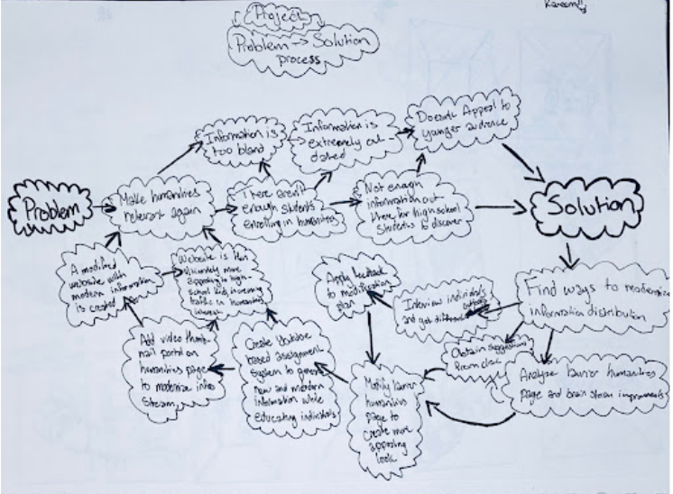
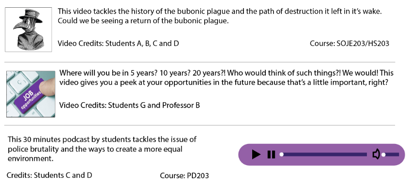

Laurier Humanities Program Website
| Timeline | Teams | Clients | My Role |
|---|---|---|---|
| Starts: Oct 11, 2019 | Kareem Lababidi | Peter Farrugia | UX designer |
| Ends: Nov 29, 2019 | Lakshan Gunajothy | UX researcher | |
| Lucas Pereira | |||
| Victoria Obande | |||
| Vishal Dhillon | |||
| Will O’Keefe | |||
| Yufei Zhao (me) |

Overview
Humanities include Modern languages, Literature, Philosophy, History, Human Geography, Law, Politics, Religion and Art. Many people feel humanities are bland. Most people even don't exactly know what are the humanities. The goal for our group is to make the Laurier Humanities website clear for people to understand what is humanities and attract more students to join the program.
Research
Our group went to our client: Peter's history lecture and observe students' behaviors during the class. Also, we interviewed some students and parents and see their attitude to the humanities program.
Findings:- People don't know what is humanities.
- Not sure what career options are available after graduation.
- Feel courses are boring.
- Think only some old people would learn.
Ideation
During the Ideation phase, all the group members brainstormed and generated ideas. We found current Laurier Humanities website is not interesting. Therefore, we are thinking of making attractive videos and pictures for content. We decide to make two types of videos:
- Content Videos: Content videos will be made by current students as assignments, and will display the type of interesting content learned by current students.
- Informative Videos: Introducing potential students to the humanities and leadership program. Use stats and research to support claims within videos.
This could be constant stream of new content to populate the website.
Prototyping
We first began with an initial hand drawn prototype in a sketchbook. Next, transformed into a digital version.
 User Testing
We tested our prototyping to Laurier freshmen and Grade 12 students.Findings:
- Put videos on a separate page.
- Words organized
- Volume function for the audio podcasts
Iteration
With the feedback we received and the research we did, we realized that we needed to update the current humanities website with a brand new page to act as a hub for the videos. We then created two separate pages for the videos that we want to display. This first page contains videos focusing on introducing the user to the humanities. The second page, called the “Student’s Theatre”, is where we will showcase the student’s creative course work. From video projects to audio podcasts, this page will serve as a spotlight page for some of the best work that students have done in their courses in the humanities and leadership program.